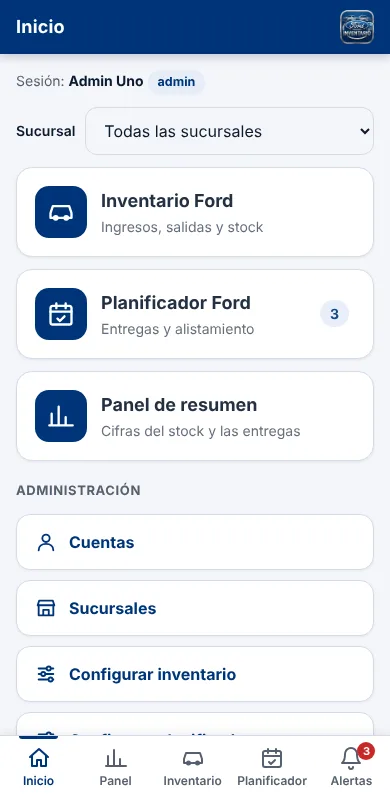
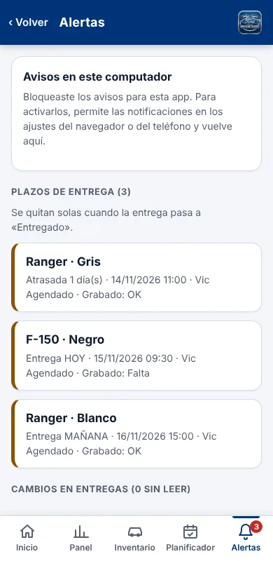
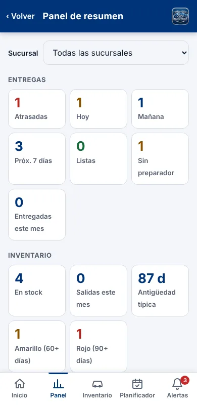
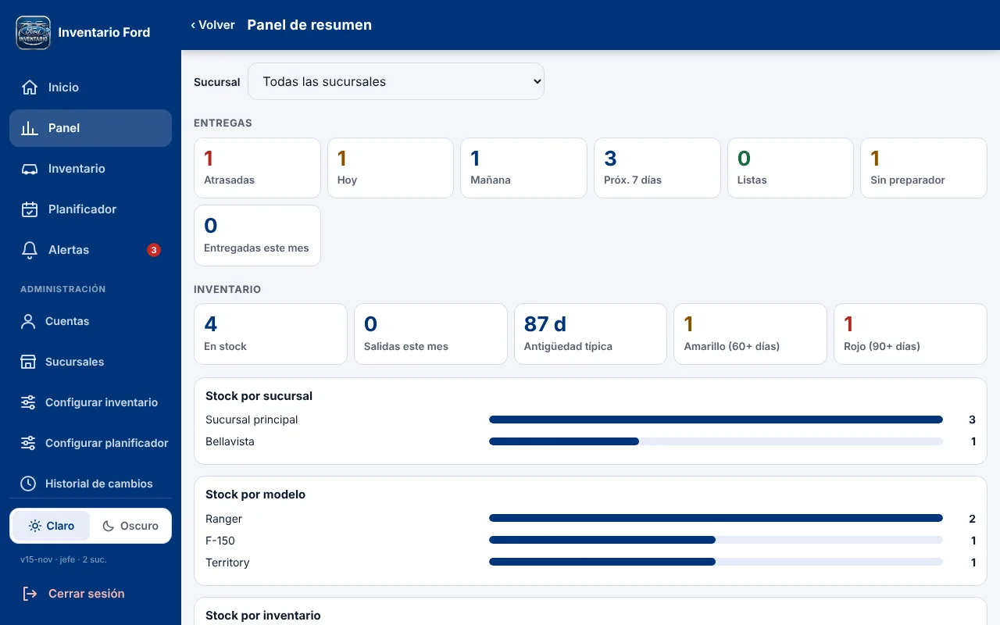
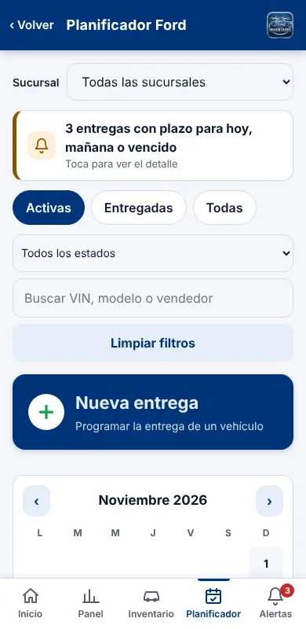
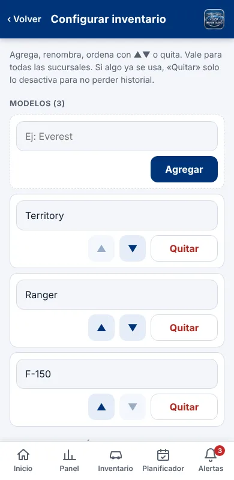
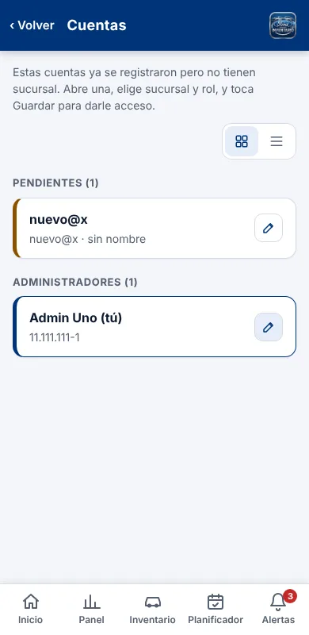
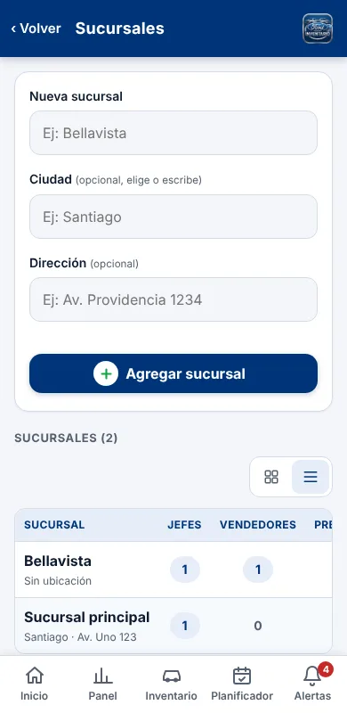
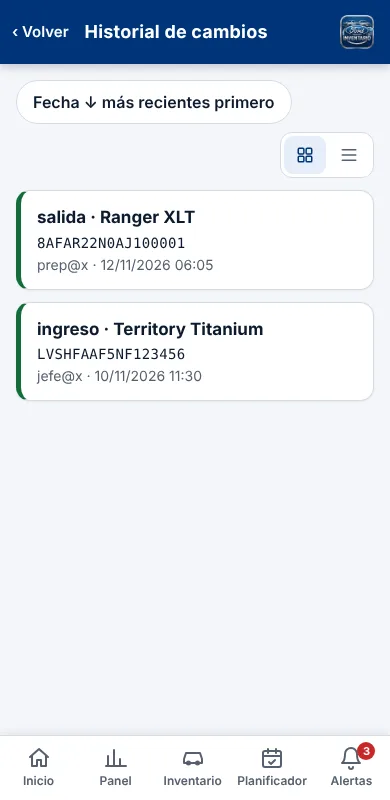

Qué puedes hacer
Todas las sucursales
Ves y cambias inventario y entregas de todas. El selector Sucursal arriba filtra una sola o muestra todas.
Cuentas y sucursales
Apruebas cuentas nuevas, asignas rol y sucursal, restableces claves y creas o desactivas sucursales.
Listas y reglas
Defines modelos, estados, colores de estados, la antigüedad del stock y el resumen diario.
Control
Panel de resumen (barras o torta, y exportar a PDF), historial total de cambios, traslados y exportación a Excel/CSV.

Entrar a la app
Abre https://nachioc.github.io/FordInventory/ en tu celular o computador.
- Escribe tu RUT y tu contraseña, y toca Entrar.
- Si es tu primera vez, toca Crear cuenta, escribe tu nombre, RUT y una contraseña. Luego elige tu sucursal y tu rol y espera la aprobación de un administrador: verás «Cuenta pendiente» hasta entonces (toca Reintentar).
- Si te dieron una clave temporal, la app te pedirá crear una nueva antes de seguir.
- Si no recuerdas tu clave, toca Olvidé mi clave o pídele al administrador que la restablezca.
El RUT debe ser válido (la app revisa el dígito verificador).
los 4 últimos dígitos del RUT (sin el dígito verificador) + -Ford, y la app le pide cambiarla al entrar.Instalarla como app
No necesitas tienda de aplicaciones: se instala desde el navegador y queda con su ícono, como cualquier app.
Android (Chrome)
Menú ⋮ → Instalar app (o «Agregar a la pantalla principal»).
iPhone (Safari)
Botón Compartir → Agregar a inicio. Es obligatorio para recibir avisos en iPhone.
Computador
Chrome, Edge o Brave: ícono de instalar al final de la barra de direcciones.
Activar los avisos en el celular
La app te avisa como un WhatsApp, aunque esté cerrada. Recibes: cada cambio en las entregas, los traslados de vehículos y el resumen diario.
- Entra a Alertas (campana).
- En la caja azul toca Activar avisos y acepta el permiso del navegador. La caja desaparece sola cuando ya están activos.
- Toca Enviar aviso de prueba para comprobar que llega.
- Para dejar de recibirlos en ese dispositivo, usa Desactivar avisos.

Modo claro, oscuro y vistas
En Inicio, al final, elige Claro u Oscuro. Se recuerda en ese dispositivo.
Los datos se abren siempre en modo lista (tabla) y puedes pasar a tarjetas con los botoncitos de arriba; la app recuerda tu elección. El planificador es solo un calendario.
En el celular, además de los botones del menú inferior, puedes deslizar el dedo a los lados para pasar entre Inicio, Inventario, Planificador y Alertas.
Panel de resumen
Entra por Panel (menú) o por el botón Panel de resumen de Inicio. Muestra al instante, para la sucursal elegida o para todas:
- Entregas: atrasadas, hoy, mañana, próximos 7 días, listas, sin preparador y entregadas este mes.
- Inventario: en stock, salidas del mes, antigüedad típica y cuántos autos están en amarillo y en rojo.
- Gráficos de stock por sucursal, modelo, inventario y estado, y de entregas activas por estado. Cámbialos entre Barras y Torta con el selector de arriba; la app recuerda tu elección.
- Exportar PDF: el botón de arriba abre la impresión del panel (con fecha y sucursal); elige «Guardar como PDF».
- Los 5 más antiguos en stock, para decidir qué mover o promocionar.


Ver el inventario
Entra por Inventario. Arriba ves cuántos autos hay en stock y cuántos hay en cada inventario (Salón, Vitrina, Patio, Subterráneo, Equipador).
- Elige En stock, Trasladados o Todos.
- Filtra por modelo, ubicación, estado o antigüedad, o busca por VIN, versión, color o vendedor.
- Toca Limpiar filtros para volver a ver todo.
Antigüedad: los autos que llevan mucho tiempo sin salir muestran un chip amarillo o rojo con los días. Los umbrales los define el administrador o el jefe (por defecto 60 y 90 días).


Ingresar un vehículo
Ingresar un vehículo
- En Inventario toca Ingresar.
- Lo primero es el VIN: toca Escanear y fotografía el código cuadrado del parabrisas o la etiqueta, o escríbelo (17 caracteres, sin I, O ni Q). La app lee el VIN y completa el modelo.
- Completa versión, color, fecha de entrada, inventario y estado. Vendedor y observación son opcionales.
- Toca Guardar ingreso. Si el VIN ya está en stock, la app te avisa.

¿Y la salida?
Un auto sin vender nunca «sale»: se traslada a otra sucursal. La salida ocurre sola cuando la entrega al cliente se marca como Entregado en el planificador (y se deshace si esa entrega vuelve a otro estado).
Corregir un dato
En la tarjeta (o con el lápiz en la lista) toca Actualizar, cambia lo que necesites y guarda. Todo queda en el historial.
Traslados con grúa
Los autos se mueven entre sucursales con la grúa. Antes se pedía por correo; ahora se pide en la app y queda todo registrado: quién lo pidió, cuándo, quién lo retiró y cuándo llegó.
| Estado | Qué significa |
|---|---|
| Solicitado | Alguien pidió el traslado. |
| Programado | La grúa ya tomó el pedido. |
| En tránsito | El auto salió y va en camino. En el inventario se ve «En tránsito → sucursal». |
| Recibido | Llegó: el auto pasa solo a la sucursal nueva. |
| Cancelado | Se canceló antes de salir. |
Pedir un traslado
- En Inventario toca Solicitar traslado (o entra por Traslados y toca Solicitar traslado).
- Escribe el VIN (o los últimos dígitos) o elige modelo y versión.
- Elige la sucursal de destino, el día (y la hora, si importa), el motivo y si es urgente.
- Toca Solicitar traslado. La grúa, los jefes y los preparadores de las dos sucursales reciben un aviso.
- No hay que esperar aprobación de nadie.
- Un auto con una entrega activa en el planificador no se puede trasladar: primero se entrega o se cambia la entrega de sucursal.
- Puedes cancelar tu solicitud mientras el auto no haya salido.
Seguir y operar los traslados
En Traslados ves la lista completa con filtros por estado y por año. Cada tarjeta muestra la ruta, quién pidió, la grúa, la patente y la hora de retiro y de llegada. Como administrador o jefe también puedes programar, marcar retirado o recibido y cancelar.
Ver el planificador de entregas
Entra por Planificador. Las entregas se agrupan en Atrasadas, Hoy, Mañana y Próximos días. Las que vencen hoy, mañana o ya vencieron se marcan y suman al número de Alertas.
- Filtra por Activas, Entregadas o Todas, por estado, o busca por VIN, modelo o vendedor.
- Las entregas se ven en un calendario: toca un día para ver sus entregas.

Calendario
El modo calendario muestra el mes completo. Cada día con entregas lleva el número de entregas y se pinta más fuerte mientras más carga tenga (1, 2 a 3, 4 o más). Toca un día para ver sus entregas debajo; usa ‹ › para cambiar de mes y Hoy para volver.

Programar una entrega
- En el Planificador toca Nueva entrega.
- Escribe el VIN: si el auto está en el inventario, la app completa modelo y color.
- Completa vendedor, fecha y hora de entrega, fecha de alistamiento, accesorios, campañas (recall) y el preparador (elige de la lista o déjalo «Sin asignar»).
- Guarda. Los preparadores de la sucursal reciben un aviso; si elegiste a uno en particular, le llega solo a él.

Si la entrega se reagenda, cambia la fecha de entrega vigente: la fecha inicial se conserva y la tarjeta muestra «(inicial …)».
Estados de la entrega
El flujo típico es: Agendado → En preparación → Lista para entregar → Entregado. «Reagendado» se usa cuando cambia la fecha.
- Al pasar a Lista para entregar, el vendedor recibe «¡Tu entrega está lista!».
- Si el grabado de patente está pendiente, la app pide confirmación antes de marcar «Lista» o «Entregado».
- Al pasar a Entregado, el auto sale del inventario solo.
Configurar la antigüedad del stock
- Entra a Configurar inventario.
- Baja hasta Antigüedad del stock.
- Escribe desde cuántos días el auto se marca amarillo y desde cuántos rojo (el rojo debe ser mayor).
- Toca Guardar.
Vale para todas las sucursales y se refleja en el inventario, el filtro «Antigüedad» y el panel.

Configurar el resumen diario
Cada día la app envía un aviso al celular con lo que hay que hacer. Tú decides cuándo y a quién.
- Entra a Configurar planificador y baja a Resumen diario por aviso.
- Activa Enviar el resumen diario.
- Elige la hora (hora de Chile) y los días de la semana.
- Marca quién lo recibe: preparadores, vendedores, admin y jefes.
- Toca Guardar y luego Enviarme una prueba ahora para ver cómo llega.
| Rol | Qué dice el resumen |
|---|---|
| Preparador | Entregas por preparar hoy, mañana y atrasadas (las suyas o sin asignar) y las próximas 3. |
| Vendedor | Sus entregas de hoy y cuántas están listas. |
| Admin y jefe | Entregas de hoy, listas y atrasadas de todas las sucursales. |
Quien no tiene nada pendiente no recibe aviso. El resumen sale una sola vez por día, dentro de las 4 horas siguientes a la hora elegida.
mejoras_parte3.sql y activado la extensión pg_cron en Supabase (Database → Extensions). El botón de prueba siempre funciona.
Cuentas y sucursales
Aprobar una cuenta nueva
- Entra a Cuentas (o a la sucursal que pidió).
- En Pendientes abre la persona: verás la sucursal y el rol que pidió, ya prellenados.
- Ajusta rol y sucursal si hace falta y toca Guardar: queda activa.

Sucursales
En Sucursales creas una nueva (nombre, ciudad y dirección), ves cuántas personas, autos y entregas tiene cada una, y la abres para editarla. Una sucursal con datos no se puede eliminar: desactívala en su lugar.

Editar personas
Toca una persona para cambiar nombre, RUT, rol, sucursal o estado, o para restablecer su clave. Con Quitar acceso la persona queda pendiente; con Eliminar usuario su cuenta se borra para siempre (sus entregas y vehículos se conservan; las que tenía como preparador quedan «Sin asignar»). No puedes eliminarte a ti mismo ni al último administrador, y el jefe no puede eliminar administradores ni jefes. Cada persona se ve como tarjeta o como lista.
Modelos, estados y códigos de VIN
En Configurar inventario y Configurar planificador agregas, renombras, ordenas con ▲▼ y quitas modelos y estados. Vale para todas las sucursales.
- Los estados con candado 🔒 son protegidos: la app los usa en filtros y avisos, así que no se renombran ni se quitan, pero sí se les puede cambiar el color.
- Si algo ya se usa, «Quitar» solo lo desactiva para no perder historial.
- Los modelos tienen buscador (lupa) y un selector para ordenarlos: tu orden con ▲▼, mayor a menor stock, menor a mayor, o A → Z / Z → A. Con un orden distinto al tuyo, ▲▼ se desactivan.
- Los códigos de VIN (primeros 8 caracteres) enseñan a la app qué modelo es cada auto; se aprenden solos al ingresar y aquí los puedes corregir.
- Probar decodificador de VIN muestra qué datos entrega el servicio externo para un VIN.
Historial de cambios
Entra por Historial de cambios. Anota absolutamente todo: ingresos, salidas, cambios en entregas (estado, preparador, fechas…), cuentas y roles, sucursales, modelos, estados, códigos VIN, ajustes, traslados, inicios y cierres de sesión y exportaciones. Cada cambio muestra campo: antes → después, con fecha, hora y quién lo hizo. Filtra por tipo con los botones de arriba, busca por persona, VIN o campo, invierte el orden y elige lista o tarjetas.

Exportar a Excel o CSV
Al final del Inventario y del Planificador hay dos botones: Exportar CSV y Exportar Excel.
- Se exporta lo que estás viendo: respeta los filtros, la búsqueda y la sucursal elegida.
- El inventario incluye la columna Días en inventario.
- El Excel (.xlsx) necesita internet la primera vez; si no hay, la app te baja un CSV, que Excel también abre con tildes bien.
Preguntas frecuentes
mejoras_parte3.sql y que pg_cron esté activo. Prueba con Enviarme una prueba ahora.